01-02 / First attempt · Early cup model
Start with the cup
The project focused on creating a working prototype where users can manipulate different elements. I began by developing the cup and exploring its basic proportions and form. The design and visuals are kept simple and clear, so each interaction is easy to follow at a glance.
Develop the shape
The second cup model was still an iteration rather than the final product, giving me an opportunity to assess the shape before designing how it would close.
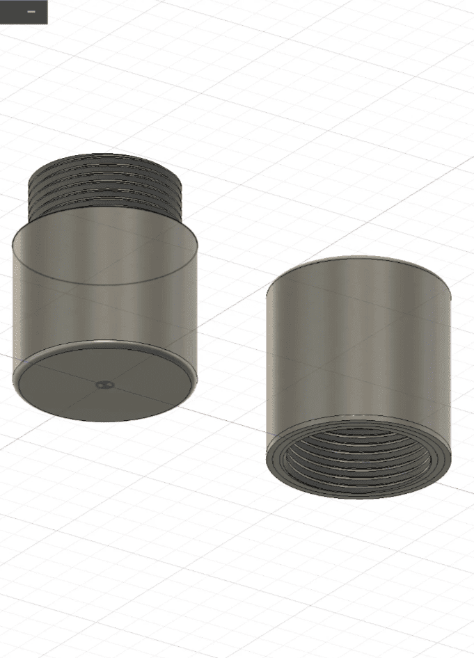
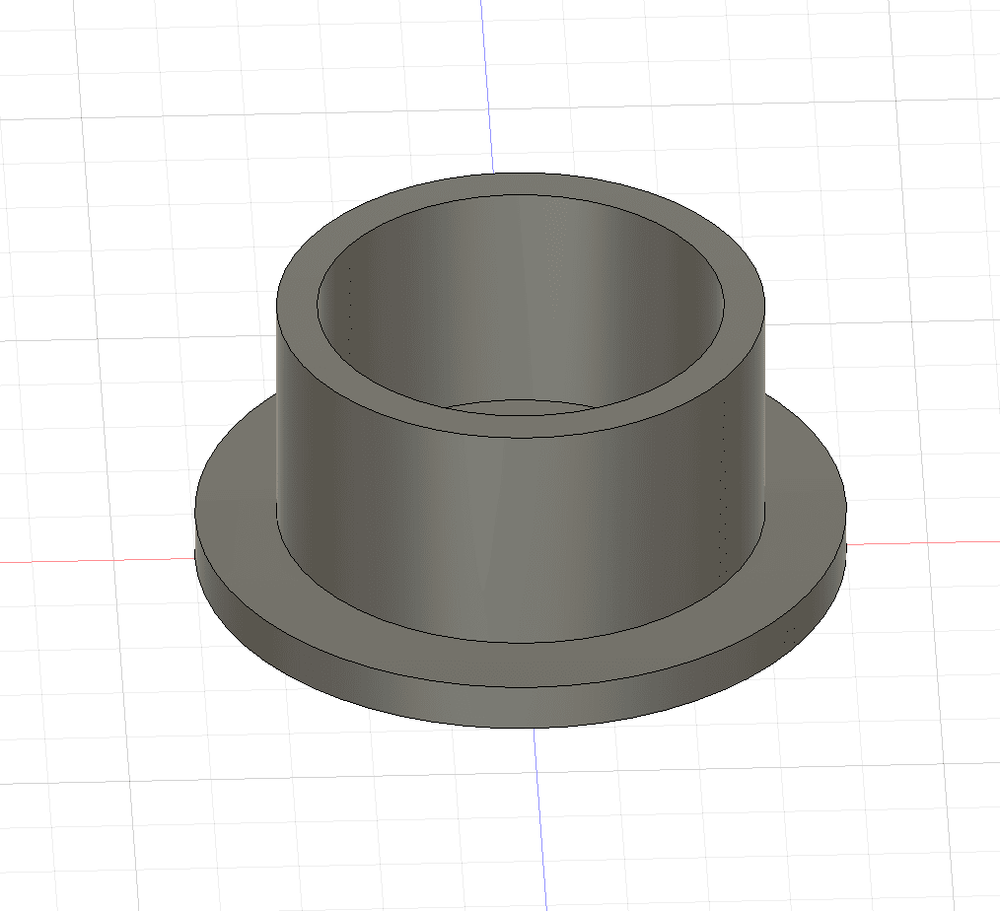
03-04 / Inspect the form · Lid
Look at the underside
Viewing the cup from another angle helped check the form and its details from below.
Model a separate cover
The lid was developed as a distinct component, so it could be fitted to the cup and tested as part of a closing system.
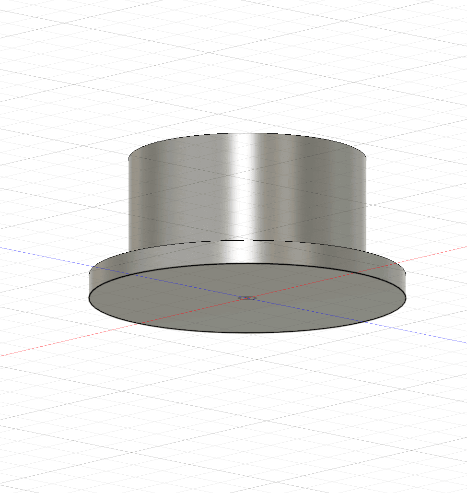
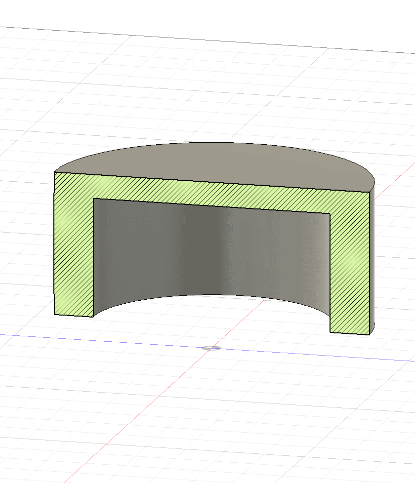
05-06 / Assembly · Thread design
Bring the cup and lid together
The two parts were brought together before adding threads, establishing the proportions of the complete cylinder.
Create the cup thread
Designing the threads was the hardest part of the project. I modelled the cup thread over its full length and worked through how it could fit the lid.

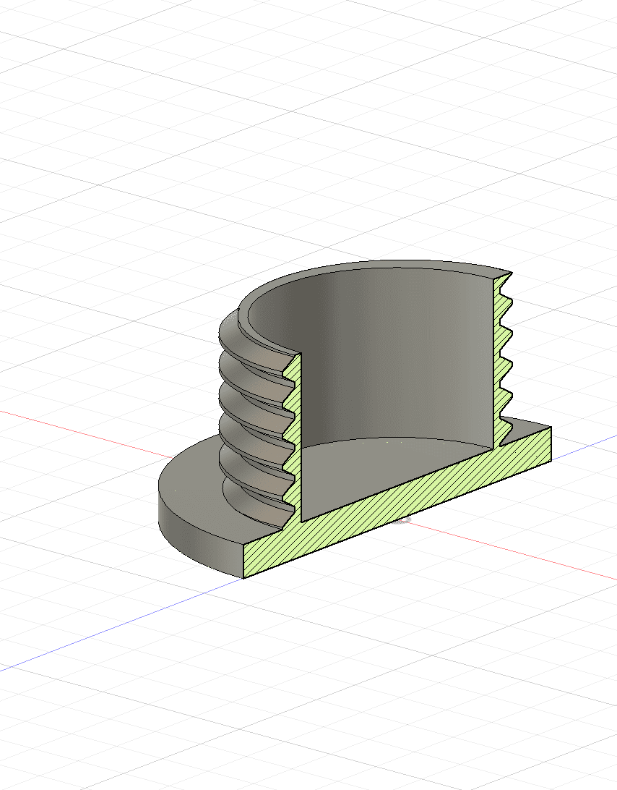
07-08 / Matching threads · Iterate
Make the lid fit
The lid needed a thread with a matching size so it could engage with the cup. Planning this relationship proved more challenging than expected.
Adjust what does not print
Minor size changes did not work in PrusaSlicer, so I restarted the design rather than carrying forward a thread geometry that could not be printed reliably.
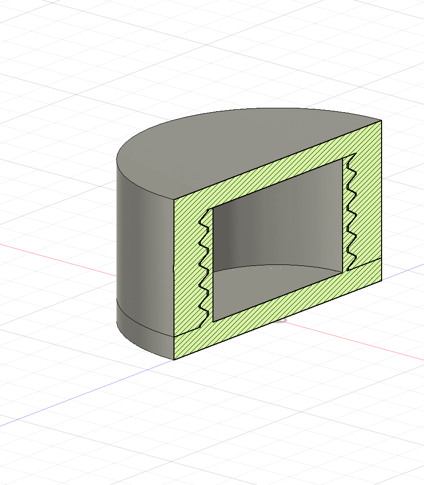

09-10 / Debug · Start again
Identify the thread problem
Testing the early thread designs exposed what was not working and helped inform a fresh approach to the cup and lid.
Return to the fundamentals
I restarted the sketches and fundamentals to make another attempt at a working prototype, building on what the earlier thread tests had taught me.
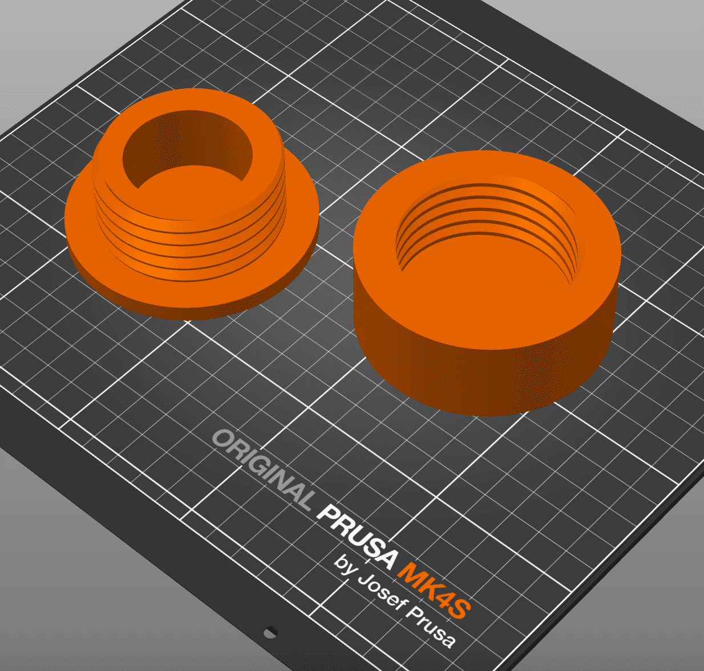

11-12 / Separate the parts · Section analysis
Model cup and lid independently
Sketching and extrusion helped define the cup and lid as separate parts, making it possible to develop and test the connection between them.
Inspect the full thread
A section view made it easier to inspect the thread across its full length and check the geometry within the model.
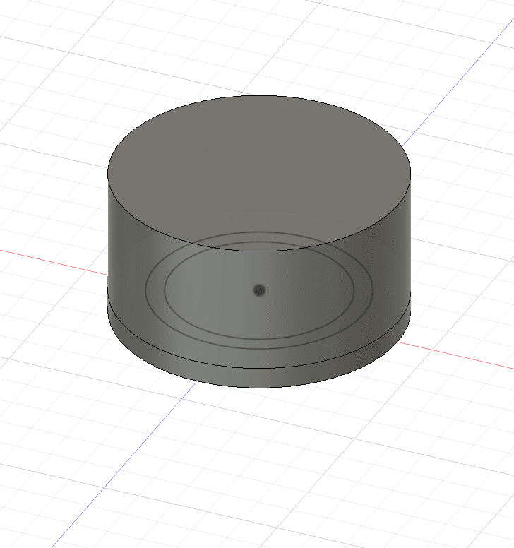
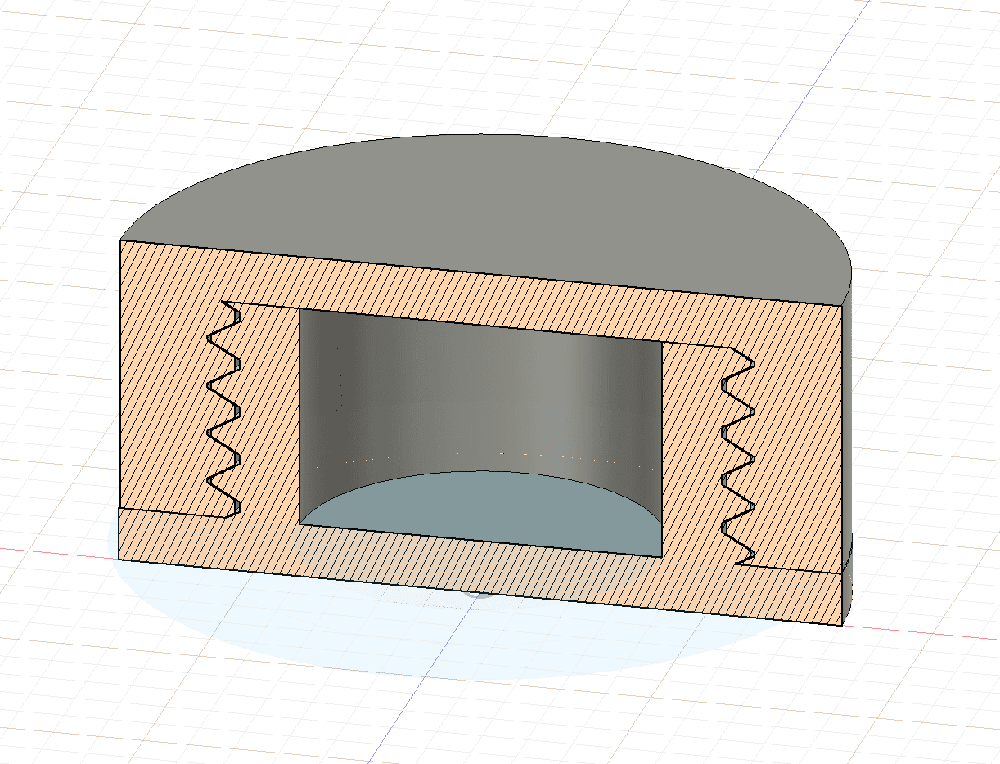
13-14 / Sketches · Review the model
Check the thread construction
Looking at the section together with the sketches helped trace how the thread geometry had been built.
Inspect another view
Viewing the model from another angle helped check its overall construction before preparing the print.

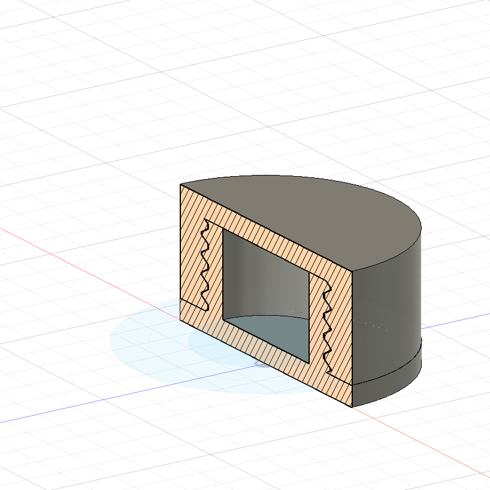
15-16 / Print preparation · Print
Prepare the cup and lid
Setting up the print output took nearly three hours. I followed a tutorial for guidance, but preparing the threaded components remained a substantial challenge.
Begin fabrication
With the files prepared, the cup and lid could move from the digital model into physical testing.
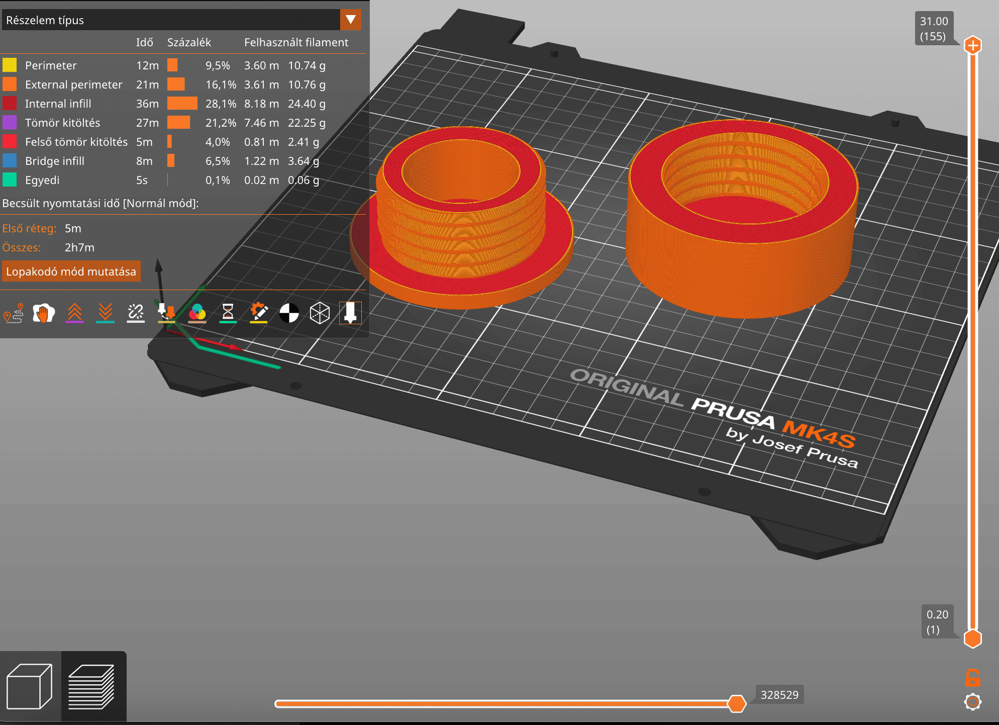
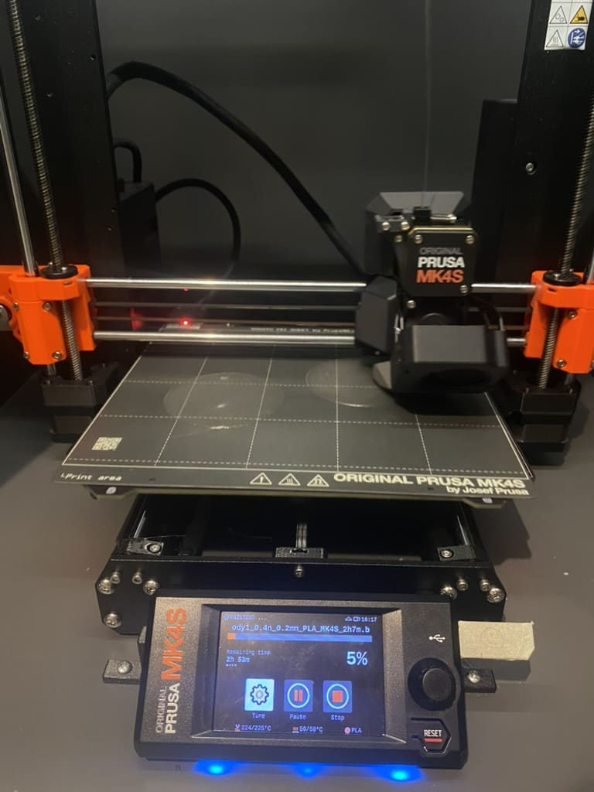
17-18 / Print progress · Prototype
Print both components
The cup and lid were printed as separate pieces so their fit and threaded connection could be evaluated together.
Assemble the final version
The printed prototype brought the transparent cylinder and its lid together into a manipulable object.
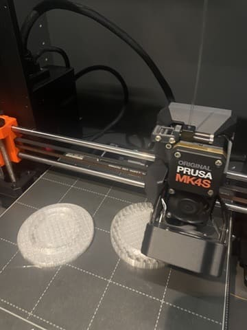

19-20 / Test · Reflection
Check the seal under water
Testing the assembled cylinder under water helped check whether the cup and lid could create the waterproof enclosure the project set out to make.
Plan the next iteration
Handling the threads was the hardest part; I spent a lot of time debugging and learned that they need to be planned carefully from the start. For the next version, I want to add a magnet feature so users can place and manipulate objects with it.